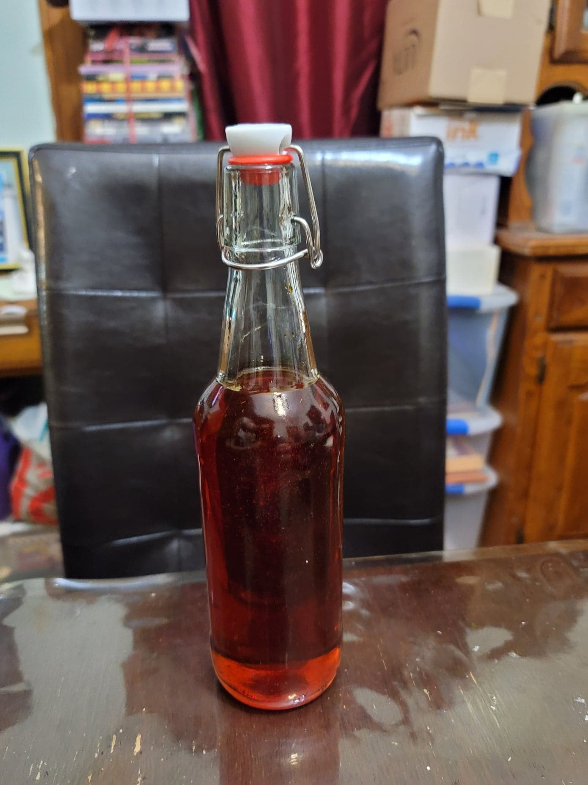

Achiote Oil

Ingredients:
- 1/2 cup Vegetable oil
- 1 tbsp Annatto seeds
Instructions:
- Place the seeds and the oil into a pot and heat over medium-low. Let cook for about 5 minutes.
- Remove from heat and let cool completely. Strain out the seeds and transfer to a container.